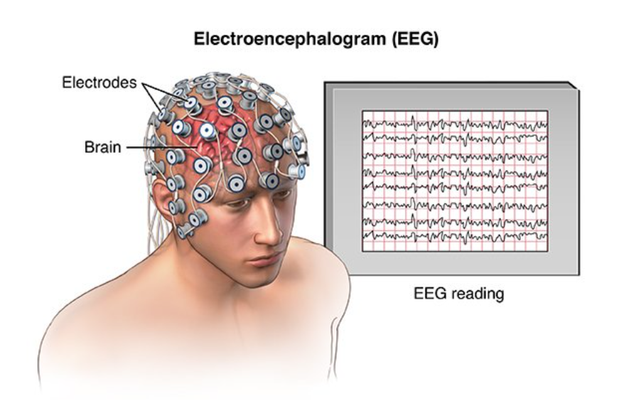
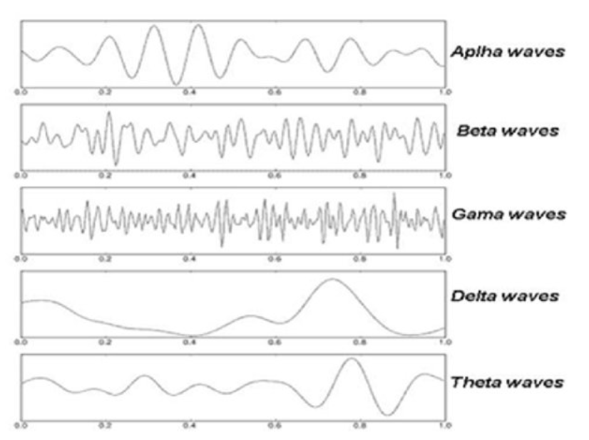
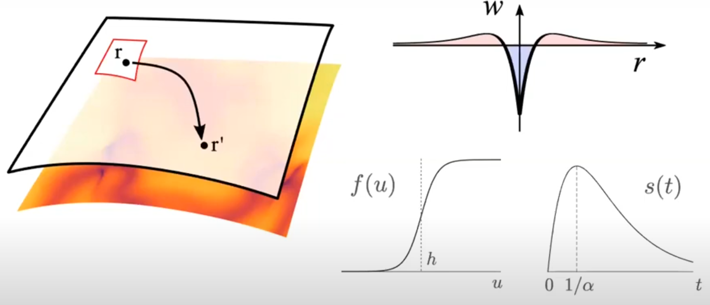
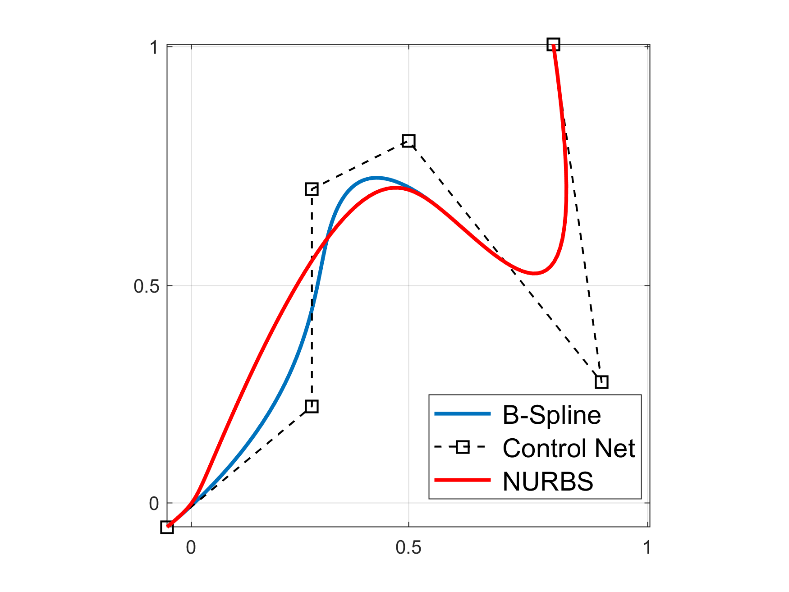
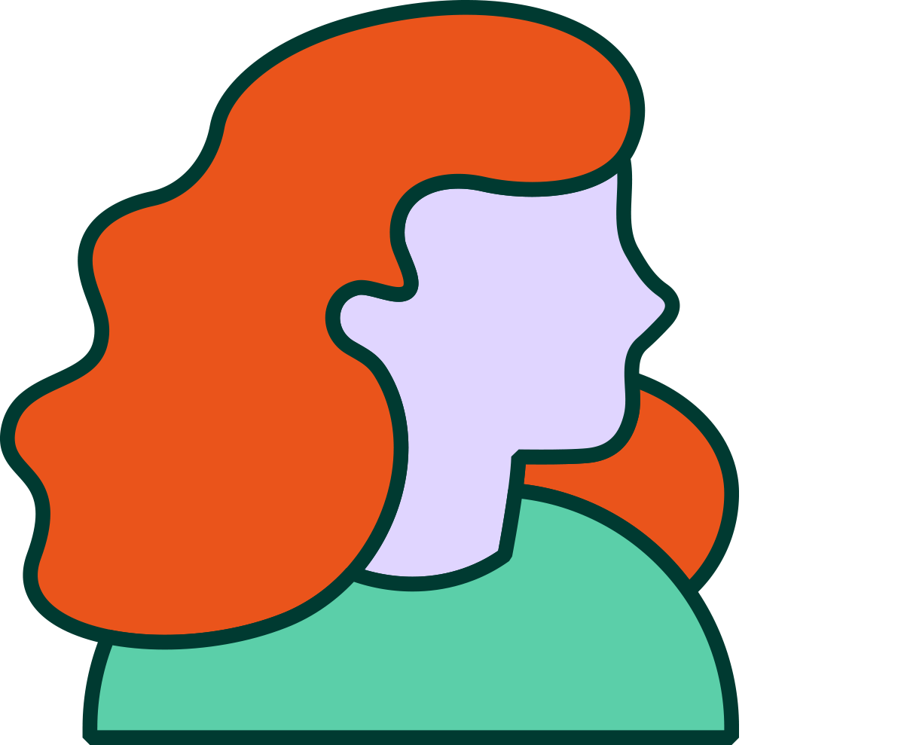

Solving neural field equations on curved surfaces with isogeometric collocation
Jonathan J Crofts
Nottingham Trent University
24th June 2025
Outline
- Motivation
- Neural Field Model
- Curved Domains
- Computing Geodesic Distances
- Solving the NFM with Isogeometric Collocation
- Preliminary Results
- Conclusions and Future Work
Motivation
Cortical geometry: why do we care?
Clinical measurements
- Morphological changes including cortical thinning, white and gray matter loss and loss of gyrification are linked to range of age-related diseases
- Modern MRI techniques allow in-vivo measurements specific to morphological changes
Example Brain shape changes associated with cerebral atrophy in Alzheimer’s disease (Blinkouskaya et al. 2021)
The under appreciated role of cortical wave-like patterns
- Better understanding the role of neural patterns in the brain is crucial for a better understanding of cognition (Muller et al., Nat. Rev. Neuro., 2018)
- Travelling waves shown to organise neural processes across space and time (Zhang et al., Neuron, 2018)
- Spiral-like, rotational wave patterns (brain spirals) are widespread during both resting and cognitive task states (Xu et al., Nat Hum. Behav., 2023)
djjjjjjjjjjjjjjjjjjjjjjjjjjjjjjjjjjjjjjjjjjjjjjjjjjjjjjjjjjjj
How are these patterns affected by changes in brain shape and dow this impact function?
How does geometry constrain function
- Is geometry a more fundamental constraint than interregional connectivity?
- Study by Pang et al suggests dynamics results from excitation of fundamental, resonant modes - derived from the geometry not the connectivity
- This view is fairly controversial!
Outline
- Motivation
- Neural Field Model
- Curved Domains
- Computing Geodesic Distances
- Solving the NFM with Isogeometric Collocation
- Preliminary Results
- Conclusions and Future Work
Neural Modelling
 - There are approximately 100 billion neurons in the brain with each electrode measuring the average activity of 100s of thousands of neurons
- Brain dynamics commonly modelled using network models of the form
\[ \frac{\mathrm{d}u_i}{\mathrm{d}t} = \frac{1}{\tau_i}\left(-u_i(t) + \sum_{j=1}^N w_{ij} f(u_j(t))\right)\quad i=1,\ldots, N \]
Neural Field Models
In the continuum limit the previously introduced network model becomes
\[ \tau \frac{\partial u(x,t)}{\partial t} = -u(x,t) + \int_{-\infty}^\infty w(x,y)f(u(y,t))\mathrm{d}y \]
Wave Behaviour and Pattern Formation
Complicated patterns have been observed experimentally (Bressloff and Kilpatrick, 2010)
- Spiral waves have been linked to working memory and sensory input
- Spatially localised patterns have been observed in cortical slices
This is related to Turing's work on pattern formation in reaction-diffusion models
For further details see e.g. Coombes 2010, Bressloff 2012 and Cook et al. 2022
Solving NFMs on Curved Surfaces
Coombes et al. (Physica D, 2017) solved the following NFM on a sphere
This is the so-called Nunez model
- $\Omega:=S^2$ is the surface of the unit sphere in $\mathbb{R}^3$
- $w(\mathbf{r},\mathbf{r}')$ is the weight distribution, $f$ the firing rate function and $\tau(\mathbf{r},\mathbf{r}')$ specifies distance-dependent delays
- Solutions can be represented by spherical harmonics
- Geodesic distances are known
Recent Related Work
- Martin et al., 2018 used collocation techniques alongside the fast marching algorithm to solve the NFM:
- Ishii and Watanebe, 2025 reports pattern dynamics in a neural field equation defined on spheroids using asymptotic methods
- Shaw et al., 2025 use radial basis functions to approximate NFMs on curved domains and fast marching as in our earlier work
Geodesic Distances
For a general surface the computation of geodesics reqiures numerical algorithms

A large class of methods are based on formulating the problem in terms of a related PDE on a smooth surface
This typically results in the need to solve the so-called Eikonal equation:
\[ \begin{align*} |\nabla\phi|^2 &= 1\quad \text{on } M\\ \phi &= 0 \quad \text{on } \partial M \end{align*} \]where $\phi:M\longrightarrow \mathbb{R}$ is the distance function
The Heat Method
Distance between two points $x$ and $y$ on a Riemannian manifold is given by Varadhan's formula:
- $k_{t,x}(y)$ the heat kernel measuring heat transfer between $x$ and $y$ in time $t$
- The method can be applied directly to point clouds lacking connectivity
Outline
- Motivation
- Neural Field Model
- Curved Domains
- Computing Geodesic Distances
- Solving the NFM with Isogeometric Collocation
- Preliminary Results
- Conclusions and Future Work
Isogeometric Analysis Hughes, Cottrell and Bazilevs
Based on the isogeometric philosophy, the solution space for dependent variables is represented in terms of the same functions that represent geometry (Hughes et al. 2005)
- Relatively new method for solving problems governed by differential equations
- Many features in common with FEM and some mesheless methods
- Based on geometric properties and inspired from CAD
- Approach is based on NURBS (Non-Uniform Rational B-Splines), a standard technology in CAD systems
B-Spline Curves
B-Spline curves in $\mathbb{R}^N$ are a linear combination of B-Spline basis functions
Control points of sample curve with $p=3$
| $i$ | 0 | 1 | 2 | 3 | 4 | 5 |
|---|---|---|---|---|---|---|
| $P_{i,x}$ | 0 | 0.3 | 0.3 | 0.5 | 0.9 | 1 |
| $P_{i,y}$ | 0 | 0.25 | 0.7 | 0.8 | 0.3 | 1 |
B-Spline Curves
A knot vector is a set of coordinates in parametric space \[ \Xi = \left\{\xi_0, \xi_1, \ldots, \xi_{n+p+1}\right\} \] with the $i$-th knot $\xi_i\in\mathbb{R}$Importantly, the $\xi_i$ are nondecreasing
B-Splines are defined recursively starting with piecewise constants ($p=0$):
B-Splines Properties
Important properties of B-Splines:
- The $\{N_{i,p}\}_{i=0,1,\ldots,n}$ are the $p$-degree B-Spline basis functions
- Basis functions of degree $p$ are at most $p-1$ continuous at internal knots
- B-splines consitute a partition of unity i.e., $\sum_{i=0}^n N_{i,p}(u)=1$
- Each $N_{i,p}$ has only compact support and is contained in the interval $[\xi_i, \xi_{i+p+1}]$
- It follows that each parameter interval $[\xi_i, \xi_{i+1}]$ has $p+1$ related local bases
NURBS Curves
Control points of sample curve with $p=3$
| $i$ | 0 | 1 | 2 | 3 | 4 | 5 |
|---|---|---|---|---|---|---|
| $P_{i,x}$ | 0 | 0.3 | 0.3 | 0.5 | 0.9 | 1 |
| $P_{i,y}$ | 0 | 0.25 | 0.7 | 0.8 | 0.3 | 1 |
| $w_i$ | 1 | 5 | 1 | 1 | 1 | 1 |

NURBS Surfaces
A NURBS surface is obtained by calculating the tensor product of the previously defined basis functions $\left\{N_{i,p}\right\}$A CAD representation of a surface is expressed using a NURBS geometry as
the $\left\{\mathbf{P}_{i,j}\right\}$ are control points and
Isogeometric Collocation
To solve the Amari equation using IGA-C
We approximate the unknown function $u(\mathbf{x},t)$ using the same NURBS basis introduced earlier i.e.
\[ u_h(\mathbf{x},t) = \sum_{i=0}^n\sum_{j=0}^m R_{i,j}^{p,q}(\xi,\eta)u_{i,j}(t) \] Here, the $u_{i,j}(t)$ are unknown control variables, and $u_h$ is our numerical approximation of the solution $u$Substituting this expression into our NFM and enforcing equality at a set of collocation points $\{\mathbf{x}_k\}_{k=1}^N$ we obtain
\[ \begin{align*} \sum_{i=0}^n\sum_{j=0}^m\frac{\mathrm{d}u_{i,j}(t)}{\mathrm{d}t}R_{i,j}(\mathbf{x}_k) &= -\sum_{i=0}^n\sum_{j=0}^m u_{i,j}(t)R_{i,j}(\mathbf{x}_k)\\ &+\int_\Omega w(\mathbf{x}_k,\mathbf{x}')f\left(\sum_i\sum_j u_{i,j}(t)R_{i,j}(\mathbf{x}') - h\right)\mathrm{d}\mathbf{x}' \end{align*} \]Or
In our experiments we make the following choices:
- We use cubic basis functions
- Collocation points are defined as Greville abscissae
- The integral is approximated using Gauss-Legendre quadrature
Outline
- Motivation
- Neural Field Model
- Curved Domains
- Computing Geodesic Distances
- Solving the NFM with Isogeometric Collocation
- Preliminary Results
- Conclusions and Future Work
Torus
- Simplest example of a surface for which analytic geodesics are unavailable
- For comparison with previous work we also use the standard parameterisation of the torus: \[ \left(\theta, \phi\right) \mapsto \left(\begin{array}{c} (R+r\cos{\theta})\cos{\phi}\\(R+r\cos{\theta})\sin{\phi}\\r\sin{\theta} \end{array}\right) = \left(\begin{array}{c}x\\y\\z \end{array}\right) \]
- Here, $R$ and $r$ are respectively the major and minor curvature radii
- We will use the above representation to solve the integral term using trapezoidal method on a regular discretisation of $[0, 2\pi]^2$
To solve our NFM we deploy the aforementioned numerical methods ...
Torus: Connectivity
- Heat method applied to the Torus
- Wizard hat connectivity kernel
Torus: Solutions
Stationary bump solutions for the Amari equation
Top: trapezoidal (LHS); isogeometric collocation (RHS)
Bottom: mesh-free isogeometric collocation
Outline
- Motivation
- Neural Field Model
- Curved Domains
- Computing Geodesic Distances
- Solving the NFM with Isogeometric Collocation
- Preliminary Results
- Conclusions and Future Work
Conclusions and Future Work
- To conclude, we have
- Discussed the state of art in neural field modelling which largely restricts to 1- and 2-D planar domains
- Looked at how to extend these ideas to non-planar domains, with a particular focus on those surfaces that do not admit an analytical representation of geodesic distances
- Deployed CAD engneering technologies to solve a simple NFM on a torus
- Calibrate introduced methodologies to construct efficient numerical solvers for upscaling to large-scale cortical geometries
- Pattern formation for non-local models on curved geometries
- Experiments on realistic cortical geometries including an exploration of the evolutionary role of cortical geometry on brain function
In the future we aim to
Aknowledgements
Collaborators
& Thank You!
PHD student : Rebecca Martin
References
